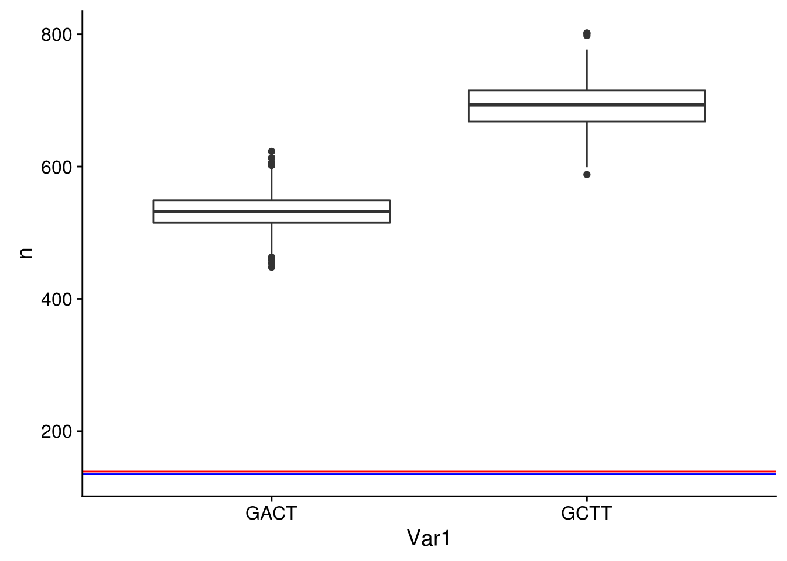
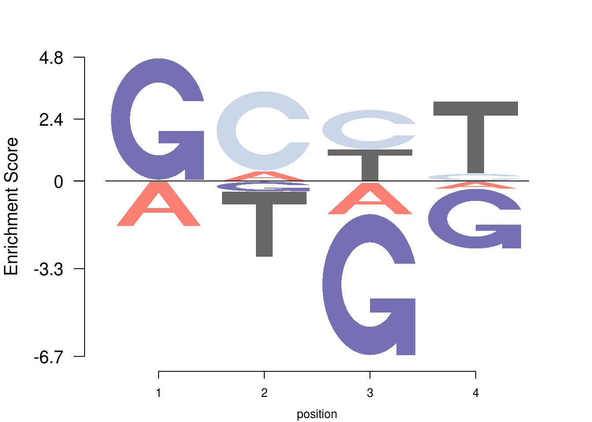

Warning in as.POSIXlt.POSIXct(Sys.time()): unknown timezone 'zone/tz/2017c.
1.0/zoneinfo/America/Chicago'Last updated: 2017-12-13
Code version: dbec689
What is the genome composition of P. berghei? The following command got me the result seen below:
$ seqtk comp PlasmoDB-34_PbergheiANKA_Genome.fasta | awk 'BEGIN {l=0;A=0;C=0;G=0;T=0} {l=l+$2;A=A+$3;C=C+$4;G=G+$5;T=T+$6} END {print "A: "A/l" C: "C/l" G: "G/l" T: "T/l}'
A: 0.390528 C: 0.110397 G: 0.110028 T: 0.389048Now let’s set promoter regions for all the genes we care about. First, we’ll import all genes, filter them, and create lists of genes we want to explore further.
gff <- rtracklayer::import.gff3("../data/PlasmoDB-34_PbergheiANKA.gff")Warning in is.na(x[[i]]): is.na() applied to non-(list or vector) of type
'environment''BiocParallel' did not register default BiocParallelParams:
invalid class "MulticoreParam" object: 1: 'cluster', '.clusterargs', '.uid', 'RNGseed' must be length 1
invalid class "MulticoreParam" object: 2: '.clusterargs', '.controlled', 'logdir', 'resultdir' must be length 1nuclear_chromosomes <- c("PbANKA_01_v3","PbANKA_02_v3","PbANKA_03_v3","PbANKA_04_v3",
"PbANKA_05_v3","PbANKA_06_v3","PbANKA_07_v3","PbANKA_08_v3",
"PbANKA_09_v3","PbANKA_10_v3","PbANKA_11_v3","PbANKA_12_v3",
"PbANKA_13_v3","PbANKA_14_v3", "PbANKA_00_v3_archived_contig_1",
"PbANKA_00_v3_archived_contig_2", "PbANKA_00_v3_archived_contig_3",
"PbANKA_00_v3_archived_contig_4", "PbANKA_00_v3_archived_contig_5")
protein_coding_genes <- unique(
unlist(
lapply(
stringr::str_split(
dplyr::filter(
tibble::as_tibble(gff),type=="CDS",seqnames %in% nuclear_chromosomes)$ID,pattern="[.]"),function(x) x[1])))Warning in as.data.frame(mcols(x), ...): Arguments in '...' ignoredgenes <- GenomicRanges::GRanges(dplyr::filter(tibble::as_tibble(gff), type=="gene", ID %in% protein_coding_genes))Warning in as.data.frame(mcols(x), ...): Arguments in '...' ignoredNow we’ll get promoter intervals:
proms <- tibble::as_tibble(GenomicRanges::promoters(genes,upstream=1500,downstream=0))Warning in as.data.frame(mcols(x), ...): Arguments in '...' ignoredproms$score <- 1
proms$start <- proms$start - 1
proms$start <- ifelse(proms$start<0,0,proms$start)
proms <- dplyr::select(proms,seqnames,start,end,ID,score,strand)
proms <- dplyr::rename(proms,name=ID)
proms$start <- as.integer(proms$start)
readr::write_tsv(x=proms,path="../data/promoters_1500bps.bed",col_names=F)Now use bedtools to generate strand-specific sequences:
bedtools getfasta -fi PlasmoDB-34_PbergheiANKA_Genome.fasta -bed promoters_1500bps.bed -s -name > promoters_1500bps.fastaUnfortunately, I get the following error messages:
Feature (PbANKA_01_v3:515305-516805) beyond the length of PbANKA_01_v3 size (515659 bp). Skipping.
Feature (PbANKA_10_v3:1639716-1641216) beyond the length of PbANKA_10_v3 size (1640193 bp). Skipping.
Feature (PbANKA_02_v3:621636-623136) beyond the length of PbANKA_02_v3 size (622508 bp). Skipping.
Feature (PbANKA_06_v3:983178-984678) beyond the length of PbANKA_06_v3 size (984266 bp). Skipping.
Feature (PbANKA_05_v3:930418-931918) beyond the length of PbANKA_05_v3 size (931174 bp). Skipping.I manually went back to correct these features in the original BED file and reran the previous command:
bedtools getfasta -fi PlasmoDB-34_PbergheiANKA_Genome.fasta -bed promoters_1500bps_corrected.bed -s -name > promoters_1500bps_corrected.fastaNo warnings this time!
Finally, we can generate background models for these sequences:
cat promoters_1500bps_corrected.fasta | fasta-get-markov -m 4 > promoters_1500bps_corrected.backgroundFinally, we can search the sequences.
We’ll use FIMO to search the promoter sequences:
fimo --bgfile promoters_1500bps_corrected.background --oc fimo_promoters_1500_genomic_1e4 --parse-genomic-coord --thresh 1e-4 8mer_motifs.meme promoters_1500bps_corrected.fasta
fimo --bgfile promoters_1500bps_corrected.background --oc fimo_promoters_1500_1e4 --thresh 1e-4 8mer_motifs.meme promoters_1500bps_corrected.fasta
fimo --bgfile promoters_1500bps_corrected.background --oc fimo_promoters_1500_genomic_1e3 --parse-genomic-coord --thresh 1e-3 8mer_motifs.meme promoters_1500bps_corrected.fasta
fimo --bgfile promoters_1500bps_corrected.background --oc fimo_promoters_1500_1e3 --thresh 1e-3 8mer_motifs.meme promoters_1500bps_corrected.fasta Now we can look at our genes of interest to see if there are any differences between the two motifs:
# import differentially expressed gene list
diff_reg <- readr::read_tsv("../data/differentially_regulated.txt",col_names=F)$X1Parsed with column specification:
cols(
X1 = col_character()
)# remove ribosomal RNA
diff_reg <- diff_reg[!diff_reg %in% "PBANKA_0622941"]
#read in FIMO motif hits
fimo <- readr::read_tsv("../data/fimo_promoters_1500_1e3/fimo.txt",col_names=T)Parsed with column specification:
cols(
`#pattern name` = col_character(),
`sequence name` = col_character(),
start = col_integer(),
stop = col_integer(),
strand = col_character(),
score = col_double(),
`p-value` = col_double(),
`q-value` = col_double(),
`matched sequence` = col_character()
)fimo <- dplyr::rename(fimo, pattern=`#pattern name`,seq=`sequence name`,matched=`matched sequence`)
fimo$seq <- unlist(lapply(stringr::str_split(string=fimo$seq,pattern="[::]"),function(x) x[1]))
# filter for hits within the genes we care about
fimo_diff_reg <- dplyr::filter(fimo, seq %in% diff_reg)Now let’s compare the hits within the promoters of our genes of interest to the amount of motifs found in promoters throughout the rest of the genome:
# make a histogram of the data
hist(table(fimo$seq),breaks=20,col="grey",main="Motif Hits Per Promoter",xlab="Hits")
abline(v=mean(table(fimo$seq)),col="green",lwd=2)
abline(v=mean(table(fimo_diff_reg$seq)),col="blue",lwd=2)
abline(v=max(table(fimo_diff_reg$seq)),col="red",lwd=2)Here, green is the average number of hits within the distribution, blue is the average number of hits within the differentially regulated genes, and red is the gene with the maximum number of motif hits within the differentially expressed gene set.
Let’s save that to a file.
# show data and write it to a file
fimo_diff_reg# A tibble: 274 x 9
pattern seq start stop strand score `p-value` `q-value`
<chr> <chr> <int> <int> <chr> <dbl> <dbl> <dbl>
1 GGGACTTA PBANKA_0722700 247 254 + 14.8041 5.97e-06 0.387
2 GGGACTTA PBANKA_1200091 185 192 - 14.7938 8.65e-06 0.387
3 GGGACTTA PBANKA_0836800 214 221 - 14.2165 1.04e-05 0.387
4 GGGCTTAA PBANKA_0200500 732 739 + 14.0206 1.13e-05 0.468
5 GGGACTTA PBANKA_0100021 232 239 + 12.1959 1.17e-05 0.387
6 GGGACTTA PBANKA_0317161 882 889 + 12.1959 1.17e-05 0.387
7 GGGACTTA PBANKA_0943900 297 304 - 11.6186 1.41e-05 0.400
8 GGGACTTA PBANKA_1040521 497 504 + 10.5361 2.62e-05 0.523
9 GGGCTTAA PBANKA_0100021 233 240 + 11.7113 3.00e-05 0.576
10 GGGCTTAA PBANKA_0700041 768 775 + 11.7010 3.27e-05 0.576
# ... with 264 more rows, and 1 more variables: matched <chr>readr::write_tsv(x=fimo_diff_reg,path="../data/fimo_differentially_expressed.tsv")# sample from our genes to compare to our differentially expressed set of genes
rt <- tibble::tibble(Var1=character(),n=integer())
for (i in 1:1000) {
s <- sample(x=protein_coding_genes[!protein_coding_genes %in% diff_reg],size=45,replace=F)
t <- dplyr::filter(fimo, seq %in% s)
rt <- dplyr::bind_rows(rt,tibble::as_tibble(table(t$pattern)))
}
ggplot(rt,aes(x=Var1,y=n)) + geom_boxplot() + geom_hline(yintercept=135,col="blue") + geom_hline(yintercept=139,col="red")
For the genes that have been identified as differentially expressed, what does the consensus sequence look like? Or better yet, what does the position weight matrix look like?
num_seqs <- length(fimo_diff_reg$matched)
# calculate the proportion of nucleotides at each position
pwm <- tibble::tibble(pos=integer(),A=integer(),C=integer(),G=integer(),T=integer())
for (i in 1:8) {
As <- sum(unlist(lapply(stringr::str_split(fimo_diff_reg$matched,pattern=""),
function(x) {x[i] == "A"})))
Cs <- sum(unlist(lapply(stringr::str_split(fimo_diff_reg$matched,pattern=""),
function(x) {x[i] == "C"})))
Ts <- sum(unlist(lapply(stringr::str_split(fimo_diff_reg$matched,pattern=""),
function(x) {x[i] == "T"})))
Gs <- sum(unlist(lapply(stringr::str_split(fimo_diff_reg$matched,pattern=""),
function(x) {x[i] == "G"})))
pwm <- dplyr::bind_rows(pwm, tibble::tibble(pos=i,A=As/num_seqs,C=Cs/num_seqs,G=Gs/num_seqs,T=Ts/num_seqs))
}
cols1 <- RColorBrewer::brewer.pal(4,"Paired")
color_profile <- list("type" = "per_row","col" = c("#E41A1C", "#377EB8", "#F0E442", "#4DAF4A"))
logo <- pwm[,2:5]
p <- slot(seqLogo::makePWM(t(logo)),name="pwm")
Logolas::nlogomaker(p,
color_profile=color_profile,
logoheight="log",
pop_name="Enrichment-Depletion Logo",
bg=c(0.390528,0.110397,0.389048,0.110028))frame width not provided, taken to be 1
frame width not provided, taken to be 1
sessionInfo()R version 3.4.2 (2017-09-28)
Platform: x86_64-apple-darwin17.0.0 (64-bit)
Running under: macOS High Sierra 10.13.1
Matrix products: default
BLAS: /System/Library/Frameworks/Accelerate.framework/Versions/A/Frameworks/vecLib.framework/Versions/A/libBLAS.dylib
LAPACK: /System/Library/Frameworks/Accelerate.framework/Versions/A/Frameworks/vecLib.framework/Versions/A/libLAPACK.dylib
locale:
[1] en_US.UTF-8/en_US.UTF-8/en_US.UTF-8/C/en_US.UTF-8/en_US.UTF-8
attached base packages:
[1] stats graphics grDevices utils datasets methods base
other attached packages:
[1] bindrcpp_0.2 DT_0.2 cowplot_0.8.0 ggplot2_2.2.1
loaded via a namespace (and not attached):
[1] Rcpp_0.12.13 RColorBrewer_1.1-2
[3] bindr_0.1 compiler_3.4.2
[5] git2r_0.19.0 plyr_1.8.4
[7] GenomeInfoDb_1.10.3 XVector_0.14.1
[9] bitops_1.0-6 tools_3.4.2
[11] zlibbioc_1.20.0 digest_0.6.12
[13] gridBase_0.4-7 lattice_0.20-35
[15] evaluate_0.10.1 tibble_1.3.4
[17] gtable_0.2.0 pkgconfig_2.0.1
[19] rlang_0.1.4 Matrix_1.2-11
[21] yaml_2.1.14 parallel_3.4.2
[23] seqLogo_1.40.0 dplyr_0.7.4
[25] rtracklayer_1.34.2 stringr_1.2.0
[27] knitr_1.17 Logolas_1.2.2
[29] hms_0.3 Biostrings_2.42.1
[31] htmlwidgets_0.9 S4Vectors_0.12.2
[33] IRanges_2.8.2 stats4_3.4.2
[35] rprojroot_1.2 grid_3.4.2
[37] glue_1.2.0 Biobase_2.34.0
[39] R6_2.2.2 BiocParallel_1.8.2
[41] XML_3.98-1.9 rmarkdown_1.8
[43] readr_1.1.1 magrittr_1.5
[45] GenomicAlignments_1.10.1 Rsamtools_1.26.2
[47] backports_1.1.1 scales_0.5.0
[49] htmltools_0.3.6 BiocGenerics_0.20.0
[51] GenomicRanges_1.26.4 assertthat_0.2.0
[53] SummarizedExperiment_1.4.0 colorspace_1.3-2
[55] labeling_0.3 stringi_1.1.5
[57] RCurl_1.95-4.8 lazyeval_0.2.1
[59] munsell_0.4.3 SQUAREM_2017.10-1 This R Markdown site was created with workflowr